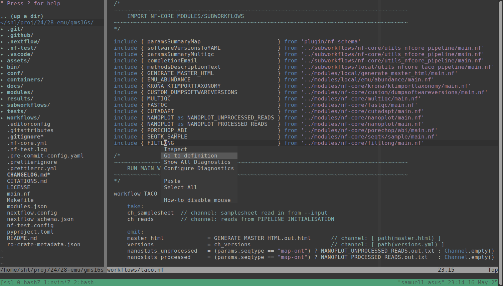

Setting up the Nextflow Language Server (LSP) with NeoVim

It turns out it is super easy to get Nextflow code intelligence to work in NeoVim now! This is thanks to the newly released Nextflow language server following the increasingly popular Language Server Protocol (LSP).
See this episode of the Nextflow podcast for a more in-depth discussion on this new functionality.
The focus has initially been on making this to work in the very popular Visual Studio Code editor, but through some recent developments by the community, setting it up in NeoVim is also pretty smooth.
This is great for me who hardly can work outside the terminal after having compounded tons of effort into streamlining my workflow for terminal based tools.
Below is an attempt to document what steps I took to get this to work, which included migrating my config from classic Vim, as the latter does not seem to support the language server protocol at all.
Migrating to NeoVim
NeoVim can be set to use classic vim config files such as ~/.vimrc, but it stores
these files in another location: ~/.config/nvim. In this folder, you can use
one of two possible types of config files:
~/.config/nvim/init.nvim~/.config/nvim/init.lua
You can use either of these locations, and write your config in classic VimScript, or in Lua, respectively.
With option 1, you can simply copy your old ~/.vimrc file to that location.
There are two caveats to be aware of here though:
The first is that you can not use two different init-files simultaneously.
The second is that some configurations such as setting up LSP servers and clients generally requires you to use the lua config.
This means that if you - like me - don’t want to re-create your vim config from scratch in lua just yet (there’s so much to learn), you have to do a small work-around:
- Rename your classic vim config to something else, like
~/.config/nvim/legacy.vim. - Then, inside your
init.lua, you can start it with the following line:vim.cmd("source ~/.config/nvim/levacy.vim") - After that, you can add the lua-based configs for the LSP, as we will go into below.
Installing the Nextflow language server
You need to install the Nextflow Language server next.
The simplest way to do this is to just download the jar-file from the latest release which you can access from the releases page
I did:
- Create a directory
~/opt/nfls - Downloaded the file into this newly created directory.
Note that running this jar file requires that you have Java installed on your system.
Add a config for the language server in init.lua
Then, you can just add a couple of lines into your init.lua file, including a
call to the Nextflow LSP jar file. I added this:
vim.lsp.enable('nextflow')
vim.lsp.config['nextflow'] = {
cmd = { 'java', '-jar', '/home/shl/opt/nfls/language-server-all.jar' },
filetypes = { 'nextflow', 'nf', 'groovy', 'config' },
root_markers = { 'nextflow.config', '.git' },
settings = {
nextflow = {
files = {
exclude = { '.git', '.nf-test', 'work' },
}
}
}
}
Note that you need to configure the path to the .jar-file in the cmd
section, depending on where you put it.
I also added a couple of keyboard shortcuts, so that I don’t need to right-click with the mouse in neovim to access the code intelligence, which otherwise is the default:
-- LSP keymap bindings
vim.keymap.set('n', 'gd', vim.lsp.buf.definition, { desc = 'Go to Definition' })
vim.keymap.set('n', 'K', vim.lsp.buf.hover, { desc = 'Hover Documentation' })
vim.keymap.set('n', 'gi', vim.lsp.buf.implementation, { desc = 'Go to Implementation' })
vim.keymap.set('n', '<leader>rn', vim.lsp.buf.rename, { desc = 'Rename Symbol' })
vim.keymap.set('n', 'gr', vim.lsp.buf.references, { desc = 'Find References' })
vim.keymap.set("n", "<leader>d", function()
vim.diagnostic.open_float(0, { scope = 'line' })
end)
Done
These few steps should be enough!
If you now open up a Nextflow file in NeoVim, you should now be able to right-click on various symbols and e.g. choose “Go to definitions” etc, or, if you have set up the keyboard shortcuts, you could use those as well.
One tip more
If you also want syntax highlighting for Nextflow, you can have a look at this vim plugin , which is the one I’m using.
End
Hope you find this useful. Let me know in the comments if you have any further caveats to share!